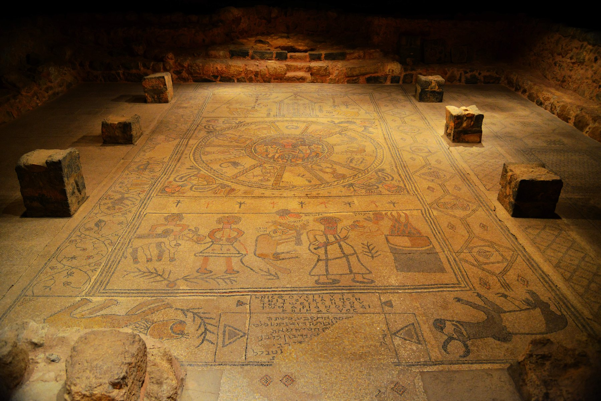

Beit Alpha Synagogue Mosaic

- Find Name
- Beit Alpha Synagogue Mosaic
- Description
- The mosaic floor of a synagogue at Beit Alpha in the Jezreel Valley, at the foot of Mount Gilboa, found in 1928 by kibbutzniks digging irrigation ditches and excavated by Eleazar Sukenik. Its three panels show the Binding of Isaac, a zodiac wheel with Helios driving a four-horse chariot at the centre, Hebrew zodiac names and the four seasons as female busts in the corners, and a Torah shrine panel naming the artists Marianos and his son Hanina. The synagogue is dated to the 5th-6th century AD, with sources differing between a 5th-century and a 6th-century date.
- Historical Period
- Byzantine
- Evidence Class
- Contextual
- Interpretations
- The mosaic shows a late-antique Jewish community decorating its synagogue with the zodiac and a sun-god figure, which raises the question of how such imagery sat alongside Jewish worship; scholars debate whether the zodiac was decorative, calendrical, or symbolic, and the mosaic must not be read as evidence about biblical-era worship, since it is half a millennium after the biblical period. The Binding of Isaac panel visualises Genesis 22 for a congregation that already knew the story.
- Alternative Names
- Beit Alfa Synagogue Mosaic; Bet Alpha Synagogue Mosaic
- Related Books
- Scripture Illuminated
- Biblical Significance
- The mosaic is a vivid visual retelling of the Binding of Isaac, showing how Genesis 22 stayed central to Jewish worship and art centuries after it was written.
- Artifact Date
- 5th-6th century AD
- Current Location
- In situ, Beit Alpha, Israel
- Date Discovered
- 1928
- Discovery Location
- Beit Alpha, Jezreel Valley, Israel
- Timeline Era
- Early Church
Awaiting Review Not yet checked against scholarly sources. Treat its claims as provisional until this entry is reviewed. About verification
Last reviewed: not yet reviewed